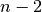
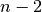

PoldiPeakSearch dialog.
Table of Contents
| Name | Direction | Type | Default | Description |
|---|---|---|---|---|
| InputWorkspace | InOut | Workspace2D | Mandatory | Workspace containing a POLDI auto-correlation spectrum. |
| MinimumPeakSeparation | Input | number | 15 | Minimum number of points in the spectrum by which two peaks have to be separated. |
| MaximumPeakNumber | Input | number | 24 | Maximum number of peaks to be detected. |
| MinimumPeakHeight | Input | number | 0 | Minimum peak height. |
| OutputWorkspace | Output | TableWorkspace | Workspace containing detected peaks. |
PoldiPeakSearch is a peak-finding routine for POLDI correlation data obtained with PoldiAutoCorrelation v5. These spectra are often very spikey, so identifying peaks can be difficult, especially in the low  -region of the spectrum. The original analysis software implemented a special procedure to avoid these problems and this implementation is very close to it.
-region of the spectrum. The original analysis software implemented a special procedure to avoid these problems and this implementation is very close to it.
Map each point of the spectrum  , except the first and the
last to the sum of its value and its neighbor’s values:
, except the first and the
last to the sum of its value and its neighbor’s values:
The new spectrum  contains  points when contains
contains  points when contains  .
.
Identify peak positions in , which is done with a recursive
algorithm, consisting of these steps:
 in the list,
store in peak-list.
in the list,
store in peak-list. and
and ![(i_{max} + \Delta, i_{n} - \Delta]](../_images/math/6c031a37da422235813b1c39fce7c898b04d0f26.png) ,
where
,
where  is the mininum number of data points between two peaks.
is the mininum number of data points between two peaks.Sort list by value (summed correlation counts, ) in descending order, keep the first
 items of the list.
items of the list.
Map peak positions from back to
Perform background and fluctuation estimation:
(except the first and the last)
that are further than elements away from any peak
position )
) as scale estimator (
as scale estimator ( )
)Estimate peak intensity as 
If a minimum peak height is set, discard all peaks that are smaller
than this, if not, discard all peaks that are lower than

The peaks are stored in a new table workspace.
Note
To run these usage examples please first download the usage data, and add these to your path. In MantidPlot this is done using Manage User Directories.
A typical peak search procedure would be performed on correlation data, so this analysis is performed first, followed by a peak search with default parameters.
# Load data file and instrument, perform correlation analysis
raw_6904 = LoadSINQFile(Filename = "poldi2013n006904.hdf", Instrument = "POLDI")
LoadInstrument(raw_6904, RewriteSpectraMap=True, InstrumentName = "POLDI")
correlated_6904 = PoldiAutoCorrelation(raw_6904)
# Run peak search algorithm, store peaks in TableWorkspace
peaks_6904 = PoldiPeakSearch(correlated_6904)
# The tableworkspace should contain 14 peaks.
print "The correlation spectrum of sample 6904 contains", peaks_6904.rowCount(), "peaks."
Output:
The correlation spectrum of sample 6904 contains 14 peaks.
Categories: Algorithms | SINQ\Poldi